AMPLIACIÓN PRODUCTO A PLANTA
back
Descripción SOP: Ampliación de producto a planta
Frecuencia del proceso: Diaria
Programas utilizados: SAP – ECC
Fecha de revisión: 25/07/2024
Fecha de creación: 01/11/2019
Creado por: Evelyn Paulín
Revisado por: Yahir Orona
1. Propósito
- El propósito de este documento es presentar todos los pasos necesarios para hacer la ampliación de cualquier producto a un centro.
2. Alcance
- Al ejercer la ampliación de un material, apoyamos para que este pueda ser utilizado por el almacén de la planta, llevar a cabo algún traspaso, y que así mismo sea considerado de forma natural en temas de pedidos, tramos etc.
3. Responsabilidades
- El Analista de MDM es el responsable de llevar a cabo la ampliación con la previa solicitud.
4. Descripción del proceso #1
4.1 Solicitud
- Dicho requerimiento puede ser solicitado por el equipo de Materiales, Abasto y Empacotecnia
4.2 Ejecución del proceso
- Entramos a la transacción MM60, para poder revisar que efectivamente el material aun no este habilitado en el centro señalado y así mismo considerar algún centro como base. En este caso en la columna material agregamos el sku y damos clic en ejecutar.
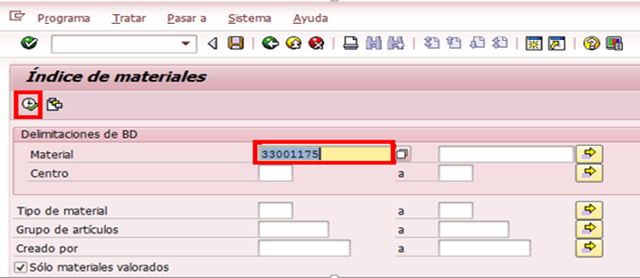
- Te arrojara en que centros actualmente está ampliado dicho material, lo cual te puede servir de referencia.
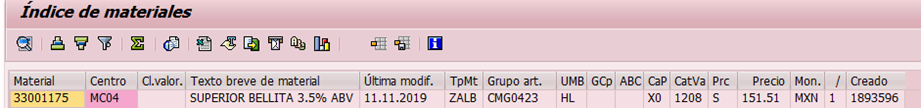
- Posteriormente ir a la transacción ZMATERIALES y seleccionar la opción de Ampliar Materiales.
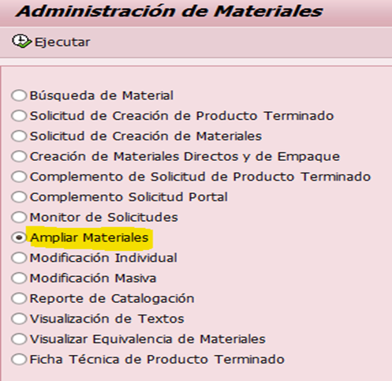
- En el apartado Origen de Ampliación capturaremos los siguientes datos.
- Tipo de Material.- agregaremos si es un ZER1, ZER2, ZREM, ZALB, etc.
- En este ejemplo haremos un ZALB
- Numero de Material.- Copiaremos el sku que deseamos ampliar.
- Centro.-Agregaremos el centro en donde actualmente se encuentra ampliado, es decir el que vamos a tomar de referencia.
- Almacen.- capturaremos el almacén 1000. Considerando este ejemplo.
- Organización de Ventas.- Capturaremos la 0083.
- En la parte destino de Ampliación agregaremos lo siguiente.
- Centro.- El destino en donde lo queremos ampliar.
- Organización de Ventas.- Capturar 0083
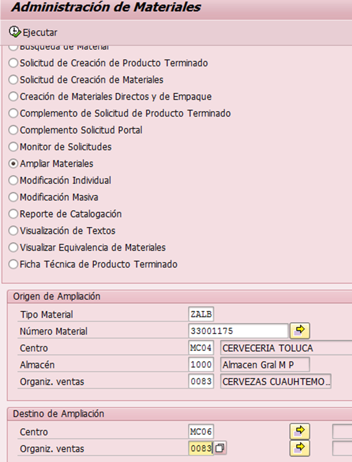
Puedes validar nuevamente en la MM60 y ya te deberá aparecer el centro que acabas de ampliar.
- Notificar al usuario que ya fue ejecutado el movimiento y así mismo incluir al equipo de Costos.
- 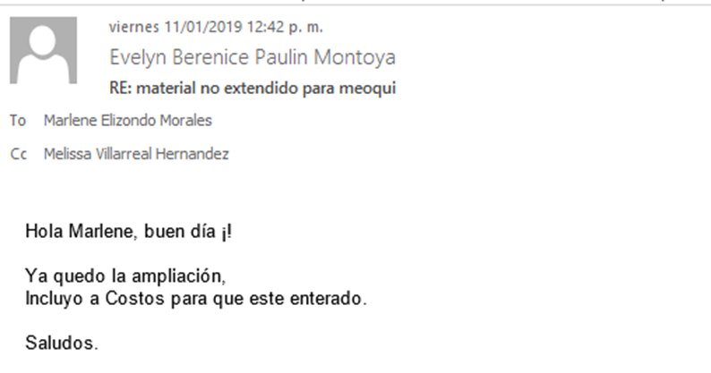
5. Descripción del proceso Innowera
5.1 Solicitud
- Dicho requerimiento puede ser solicitado por el equipo de Logistica
5.2 Ejecución del proceso
- Entramos a la transacción MM60, para poder revisar que efectivamente el material aun no este habilitado en el centro señalado y así mismo considerar algún centro como base. En este caso en la columna material agregamos el sku y damos clic en ejecutar.
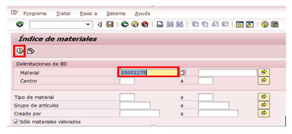
- Te arrojara en que centros actualmente está ampliado dicho material, lo cual te puede servir de referencia.
- Posteriormente en nuestra carpeta de plantillas de Innowera hay que seleccionar la plantilla de 1- Ampliar
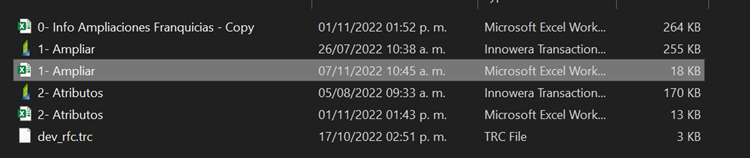
- En el apartado Origen de Ampliación capturaremos los siguientes datos. Nota: Validar que todos los campos estén correctamente en su lugar y asegurar que no falte ningún dato.
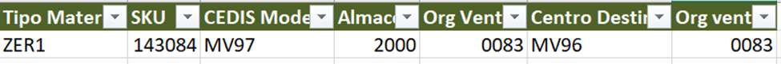
- Tipo de Material.- agregaremos si es un ZER1, ZER2, ZREM, ZALB, etc.
- En este ejemplo haremos un ZER1
- Numero de Material/SKU.- Copiaremos el sku que deseamos ampliar.
- CEDIS MODELO.- Agregaremos el centro en donde actualmente se encuentra ampliado, es decir el que vamos a tomar de referencia. Nota: Validar en la trx MM03 que el centro destino modelo no cuente con la condición de Sujeto a lote:
- Almacén.- capturaremos el almacén 2000. Considerando este ejemplo.
- Organización de Ventas.- Capturaremos la 0083.
- Centro.- El destino en donde lo queremos ampliar.
- Organización de Ventas.- Capturar 0083
- Dar click en el botón de Correr:
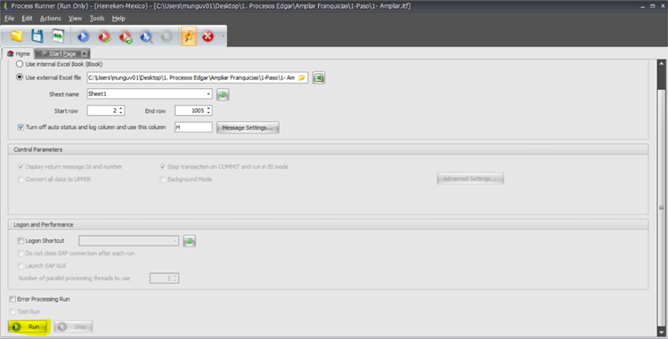
- Validar en la trx MM03 y MM04 que los siguientes datos no se hayan borrado: (MM03)
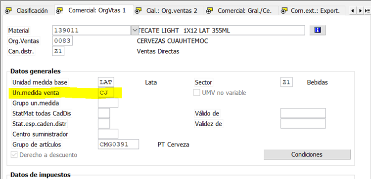
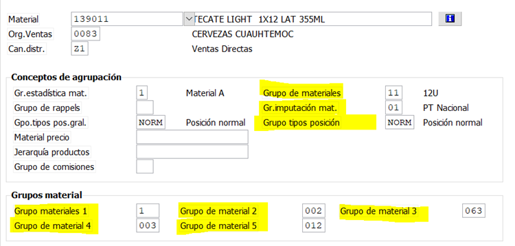
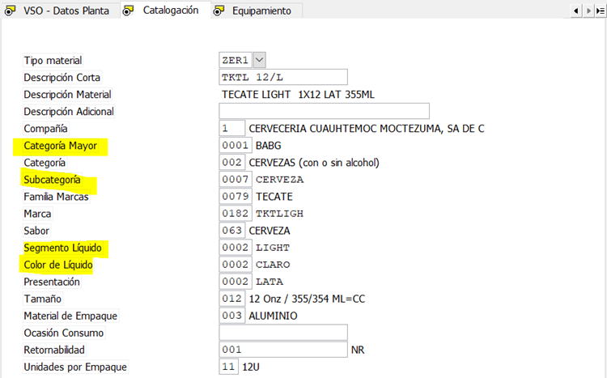
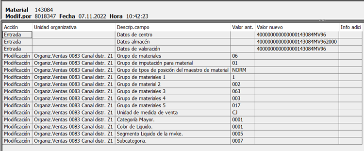
- Puedes validar nuevamente en la MM60 y ya te deberá aparecer el centro que acabas de ampliar.
- Notificar al usuario que ya fue ejecutado el movimiento y así mismo incluir al equipo de Costos.